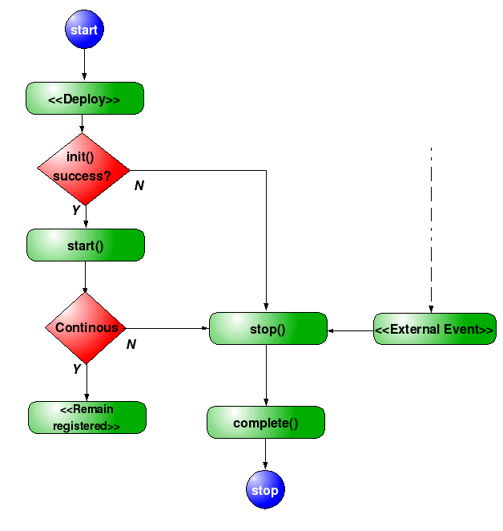
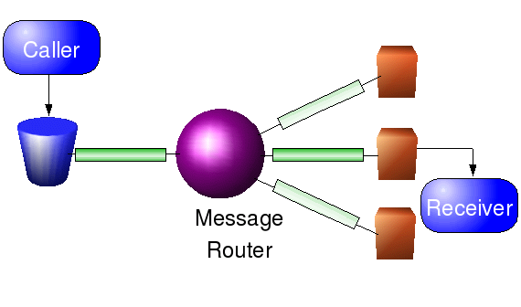

In order to deploy a component into Neon, you must first create and build a class that can be recognised by Neon. This class is called an Agent
Your agent may be the object you wish to deploy or a holder that contains it, but in any case, in order to load functionality into Neon, it must meet certain requirements.
All methods that you need to implement are in the org.jini.projects.neon.agents.Agent class, and in this interface are a number of methods, many of which are to deal with life cycle, recognition and binding of the agent into the partition.
Most agents, however, will be able to extend org.jini.projects.neon.agents.AbstractAgent and will only have to implement a few methods to be compliant with the Neon contract. AbstractAgent contains fields and method implementations that deal with most of the life cycle code and the binding of the agent to the environment.
If you choose to extend AbstractAgent, you will need to implement two methods. The most important of the methods, that you will have to implement is the init() method.
The init() method
init() is called every time an agent is deployed to a host, in order to set up any required objects of the agent ( these objects may be stored in transient fields, or maybe registering listeners on other agents). This called when the agent if first deployed, when the agent arrives on a new host as result of a request to TransferAgent or when an agent is recovered from a Javaspace after system shutdown.
The run() method
If you implement java.lang.Runnable, the run() method is called directly after init within the same
thread, and allow the agent to start any direct internal processing.
Other Lifecycle Methods
In addition you may want to override the other two main lifecycle methods and add your own name/namespace combination
The stop() method
Stop is called whenever the agent needs to pause processing, this may be due to a transfer request or a Ctrl-C shutdown or Jini remote termination request. The purpose of the stop() method is to ensure that any resources that are under the control of the agent are released.
The complete() method
Although strictly not required to be implemented, because it is implemented within AbstractAgent, the complete method is called as a result of the agent requiring to terminate. In most cases, agents will be temporally continuous, that is that they should always exist regardless of where they are and system failure. However, in practice, many agents will deploy and then once their function is complete be removed from the system, therefore complete is the last internal method that will be called in regard to user-defined processing (assuming you use AbstractAgent, of course). a call to complete() always follows a call to stop()

Fig
3) Flowchart of agent lifecycle
Building a Collaborative Agent
In order to allow you agents to accept calls from other agents, you must make your agent implement an interface, and, in turn, this interface must extend org.jini.projects.neon.collaboration.Collaborative;. No methods need implementing, but the Collaborative interface marks out which interfaces Neon should allow of other agents to call, and stop other agents calling methods that you don't want to expose externally.So lets take an example agent, and one that you'll become familiar with fairly quickly - the Services Agent
The services agent, allows developers to easily obtain a reference to a Jini service, without having to do Discovery and Lookup for themselves, in addition, each Service Agent is backed by it's own LookupCache.
Using a Collaborative Agent
In order to use the facilities provided by an agent, you have to obtain a reference[1] to it, from the Agent Registry.Every agent has access to it's host through it's AgentContext, in agent parlance this is called the agent's Environment. The Context is accessed through getAgentContext(), or if your agent extends AbstractAgent, simply through accessing the context field. One of the methods on AgentContext is getAgent(). The getAgent method takes a string as a name, which will look to obtain a reference to an agent with the group of the same name/namespace combination.
Fig 4) The Agent Registry
Names and namespaces
Ideally, within you should create a no-args constructor, that sets the name and namespace fields (if using AbstractAgent), or override getName() and getNamespace().
The name refers to the name in the local namespace that the agent is known as, so if you are in the 'neon' namespace you can get a services agent using context.getAgent("Services"), if, however, your agent is in a different namespace, you should get a reference to the services agent using the fully qualified reference (<namespace>.<name>) so you would call context.getAgent("neon.Services"). Every fully-qualified reference can represent one or more agents. getAgent() will return a singular agent reference, i.e. it will get an agent that has a unique ID of, say, ab67-53644567-0c4e-7826d723, that you will communicate with, if you are interfacing with Neon through it's weblink, you will use getStatelessAgent() that will return you a reference to the dispatcher for "neon.Services".
As in most systems that use namespaces, namespaces in Neon provide a degree of insulation from naming conflicts.
If, for whatever reason, you choose not to set name and namespace then Neon will use the class' package as the namespace, and if your agent's classname ends with 'Agent' will use the suffix to create the Agent name. For example, org.jini.projects.neon.sample.TestCallsAgent will have the namespace of org.jini.projects.neon.sample and the name of TestCalls.

Fig
4) Invoking methods through Zenith
Complex routing
As I mentioned, Neon automatically creates zenith message channels as agents are deployed to it, and removes them when the agent moves, completes or is killed. The basic pattern is to use a Dynamic Router to maintain the list of agents in that fq namespace. However, there may be instances where this is not exactly what you want, and you wish to implement your own message functionality. At the lowest level, you can implement your own Message endpoint or router, and there are a number of these with in the Zenith source, that allow you to bind a router to the end of a channel and manipulate messages as you get them. In addition, some of these have control channels allowing additional routing, filter and rule information to be added at runtime.In the future, it is the intent, to add Channel Templates, where a template for the set of channels and endpoints used for processing can be created and managed by Zenith when an entity is deployed into Neon, in much the same way that the default messaging routing is provided now.